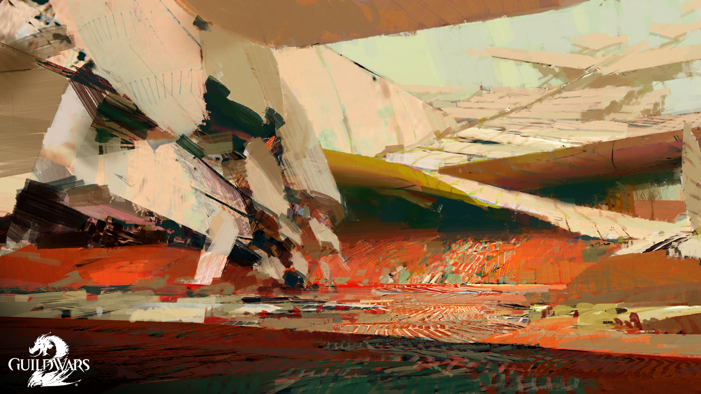
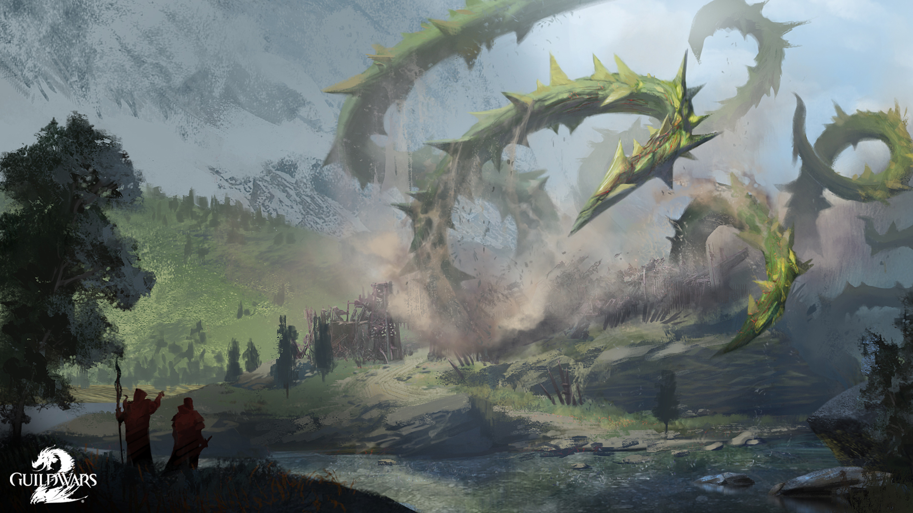
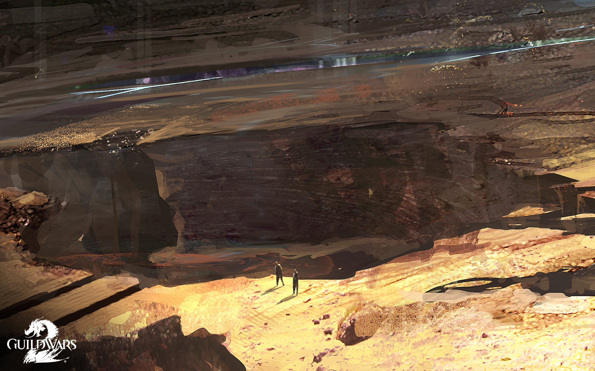

Episode 1: Gates of Maguuma
When a roar was heard somewhere out west, many worried that Scarlet Briar managed to rouse an Elder Dragon during her destructive attack on Lion's Arch. Now, mysterious incursions into Brisban Wildlands have alerted Tyria's heroes to a new threat reaching across its frontiers to tear at its foundation.
— In-game description
The Zephyrites have met with trouble, and there are rumors of a disturbance in the tangled western reaches of Brisban Wildlands.
A letter from "E" is sent to the Commander, and Marjory Delaqua, Kasmeer Meade, Taimi, Braham, and Rox to investigate the southwestern corner of Brisban Wildlands, an outpost called Tangle Root. There, we meet Seraph Belinda Delaqua positioned there. They had found a passageway leading into the Maguuma Wastelands, but it is barricaded by thick vines. It's believed that bandits have been smuggling goods in and out of there for years. While tearing apart the vines, the Inquest attack the camp. Their assault is repelled and barricades are erected just as the vines are removed. Just before the passage is explored, though, Belinda is sent back to Fort Salma to report on their progress.
Through the passage is Dry Top, where we come across the Zephyrites after their air ship had crashed. Using the aspect crystals they have brought with them, exploration of the rocky outcroppings becomes much easier. Marjory, Kasmeer and the Commander explore the wreckage of the air ship, the others left behind due to their weight. The Inquest are present in the surroundings, and have set up strange devices that block Kasmeer's magic. Near the top of the cliff, they learn of a sylvari named Aerin who was on the ship, and many of the Zephyrites were attacked before the ship crashed. A survivor of the crash, Morning, gives a dying message that the Master of Peace, their leader, was in danger from the sylvari. She claimed not to know why, but Kasmeer knew she was lying about that. The investigation moved on to the nearby city of Prosperity, a mining town here on the edge of Dry Top.
Following the trail of the sylvari, the group encounters Aerin behind another vine-blocked passage. Following him through the cliffs, the group finds both him and the Master of Peace far to the west of Prosperity, which leads to a final battle against Aerin. Upon his defeat, the Master of Peace assures the group that he is safe and will be heading on to some strange location he refuses to disclose. Aerin's body includes a note that suggests others in Prosperity might know of him. In the bar, we learn of a sylvari who rented a room - a female, with red pigtails. Further investigation suggests that it is, indeed, Scarlet who came here. The group breaks into the room and discovers many relics of Scarlet, including a journal, a Steam Minotaur and a book on dragons by Ogden Stonehealer. Taimi stays behind to investigate the apartment, while the rest leave after a short investigation. Before leaving, Taimi points out that Scarlet got information from a norn miner named Toska, relating to ley lines. Speaking to Toska points out that she found what seems to be a ley line node to the west, but it got buried in a mine collapse. Toska believed that Scarlet herself caused it and dug a new tunnel to access it.
Episode 2: Entanglement
Treachery and tragedy led Tyria's heroes on a chase across the frontiers of the Maguuma Wastes and landed them at the doorstep of their former adversary. What has Taimi been able to learn from her investigation, and who's been watching from atop the mesa above Prospect Valley?
— In-game description
Prosperity, along with several waypoints, have been attacked by thorny vines. Most of its residents are dead or fled. Braham, worried about Taimi, calls everyone together at Scarlet's apartment. Taimi is fine, protected inside Scruffy. The general consensus is that Mordremoth is responsible for these attacks. Kasmeer points out that Aerin's behavior was eerily similar to Scarlet Briar's. Taimi mentions her summary of her research. Before she finishes, though, a tremor hits and the bookcase fell, revealing a secret passage. This passage, containing various documents and devices, leads deeper into Dry Top. A herd of friendly centaurs lives in this section of the Maguuma Wastes, found as we follow a trail of various devices discarded by Scarlet. It leads to a lab the Inquest have shown great interest in. Taimi activates the various security devices to wipe out the Inquest and protect the lab from anyone but the Delaqua Investigations team from entering. It turns out this lab is built on a ley line hub, where the streams of magic are so powerful, it can be visible to the naked eye. Taimi also realizes that the waypoints work because they were placed on ley lines, and ones not placed on ley lines didn't work and were subsequently removed. Mordremoth's vines also followed the ley lines and waypoint path, branching off to Fort Salma and Fort Concordia. The group decides to split up at this point, with Marjory and Kasmeer going to meet up with Belinda at Fort Salma, while Rox and Braham go to Fort Concordia. Taimi stays behind at the lab to investigate it further.
Fort Concordia is completely ravaged by vines. Braham and Rox go fight off the Mordrem that have attacked the fort and brought everyone inside. The soldiers at the base had noticed the vines earlier, but gave it no mind until it attacked the waypoint. All the troops were taken to an asura lab to the north, but there was also a Durmand Priory caravan in the fort at the time, transporting powerful magical artifacts from one vault to another in a standard cycle. Rox and Braham split up, one accompanying the caravan north, while the other joins the hero to find the Priory caravan. They hid themselves in a cave northwest of the fort, under assault by more Mordrem. It seems that one of the artifacts being transport is a magical locket that reveals the next ruler of Kryta. The caravan safely reaches the lab, and Rox and Braham stay behind to ensure everyone is safe.
Over at Fort Salma, things are not going as well. The fort's doors are closed, but Belinda sees the Commander from over the wall. It seems some of the Seraph were caught outside the walls. Once they are rescued, the western gates open and the Commander reunites with Marjory and Kasmeer. The center of the fort has been totally gutted, filled with more Mordrem and a poison cloud. The heroes have to travel over the high ground, fighting through the Mordrem to reach an arrow cart on the southeastern corner. Kasmeer has no idea how to work an arrow cart, so the task falls to the Commander. Clearing out the eastern assault seems to be the end of it, but then the earth rumbles and a Mordrem Thrasher emerges, along with many Mordrem wolves. The thrasher is protected by a wall of thorns, so Marjory sends her minions to assault the shield so it can be attacked. Kasmeer offers to shield a section of the field from the poison darts spit out by the thrasher. After a long and hard fought battle, the thrasher is defeated, but not without consequences: Belinda Delaqua was killed. Marjory was naturally distraught at the sight. Kasmeer tries to comfort her, but it takes all of Marjory's nerves to stay strong. She stays behind to prepare for her sister's funeral. Kasmeer offers to stay, but Marjory insists the mesmer meets up with the others.
Back at the Dry Top ley line hub, after a brief explanation as to why Marjory is missing, Taimi reveals that she found Omadd's device, the one used on Ceara before she took the name Scarlet Briar. It seems Scarlet did a few modifications to it, but how extensively is unknown. Kasmeer, Braham and Rox all agree that it should be left alone, but Taimi impulsively turns it on and rushes in. A powerful blast launches everyone back as it powers on. Worried about Taimi, Kasmeer encloses you in a mesmer bubble so the Commander can enter the device. The Commander shoves Taimi out of the way, but is hit by the full blast of the device. You receive a vision of swimming through an aetherial plane, approaching an icon that represents the Pale Tree. Falling into it, the Commander sees 6 orbs light up and orbit a central, much larger sphere. One of the orbs grow near, then plunges into the center sphere, aligning the rings orbiting it and flooding the surroundings in an eerie green light. This is where the vision ends, and the Commander comes to. It seems the others pulled the Commander out of the device once the Commander started screaming in pain. The Commander talks about the vision with Rox, and claims they have seen the Eternal Alchemy, just like Scarlet. The Commander saw the dragons, and the symbol of the Pale Tree. They decide it's time to meet with the Pale Tree, inform all the leaders about Mordremoth. Kasmeer expresses doubts as to how easily it will be to have an audience with what is essentially the ruler of the sylvari, so everyone agrees to meet up later.
Episode 3: The Dragon's Reach part 1
With an Elder Dragon's corruption spreading, the heroes of Tyria set out in an attempt to gather allies to meet this new threat. But with problems of their own close to home, will world leaders add their support or just introduce more challenges?
— In-game description

Kasmeer sends a letter, saying that the audience with the Pale Tree is granted, but she wants to speak with the Commander alone. Kasmeer, Rox and Braham meet the Commander in the Omphalos chamber. Marjory stayed behind in Divinity's Reach, her sister's funeral done, while Taimi returned to Rata Sum to "catch up on schoolwork". The Commander approaches the Avatar of the Pale Tree, and discusses matters concerning Mordremoth; the speed of his spreading corruption is what surprises her the most. She sends away Warden Lochin so that the two might speak privately. She agrees to host the conference of the 5 race leaders, and the group splits off to speak to their respective leaders. Before the Commander leaves the chamber, though, Taimi sends them a mail via bird to inform them that Mordrem were spotted in Iron Marches.
The Commander decides to investigate these reports, and find that Mordrem have indeed infested much of Iron Marches. There are about 4 different assaults that need to be investigated and aided. The second one involves collecting samples, and a seed is sent by mail once the Commander completes the third. After completing the fourth and reporting back to the initial scout of the Mordrem, Taimi sends another note that Zojja granted her a meeting with Phlunt, and he wanted to see the ley line hub.
At the ley line hub, Councillor Phlunt is already there, talking to Taimi, accompanied by 4 Arcane Council guards. Phlunt is quite annoyed by Taimi's age, and seems to hold it against her, among other things. Taimi has almost finished the ley line repairer, but she still needs a few components scattered around the lab. While she tinkers with the device, she sends Scruffy in "autonomous mode" to aid the Commander's investigations. When going past Phlunt and company, they discuss Taimi's friendship with Zojja, and how it should be more closely monitored. After the Commander finds all three of Taimi's missing materials and installing them, Taimi fires the beam at Omadd's device. It'll take a few weeks before results are notable, but Phlunt reluctantly agrees. Kasmeer comes by, saying how Countess Anise would be willing to represent Divinity's Reach.
Upon first arriving in Hoelbrak after the previous paragraph's event, Trahearne sends the Commander a message, saying he heard about the meeting and plans on attending. Braham and Eir reunite at her home, and the two discuss the possibility of getting Knut Whitebear to come to the summit. Eir doubts his willingness to attend, in part because of Jormag and the Sons of Svanir. Eventually, they decide that fighting dragons on two fronts is too risky, and Eir suggests that the Commander destroy a Svanir Dragon totem to help thin their threat. Eir and Braham bond a little after fighting together in the Shiverpeak Mountains far north of Hoelbrak, and Eir thinks that this tale of battle will help convince Whitebear to come to the summit.
Back in Ascalon, Rox comes face to face with Rytlock for the first time since disobeying his orders. The tension is high between them, but Rytlock seems understanding. His initial reaction to the news of Mordremoth is that it is far away, and that the Shiverpeak mountains will stop the vines from coming through. After it was pointed out both that the vines could go around through the Field of Ruins and that if the vines do get that far, it means the other races have fallen, Rytlock considers convincing Smodur to attend the summit. He reveals that he'd been doing some research into his sword, Sohothin, and possibly found how to lift the curse of Ascalon from an old Orrian book. In addition to the two swords, the crown was also enchanted. Bringing it along with the sword should be enough to lift the curse. However, the shards got scattered across Ascalon. Taking one of the pieces, you have to track down the other 3 by the two resonating off each other. Once the crown is complete, Rytlock, Smodur and Rox travel down into Duke Barradin's tomb to charge his sword with ghostly energy. Once reaching the statue, though, it reassembles and comes to life, attacking the small band. Once the statue is defeated, Rytlock stabs the ground with Sohothin, saying, "Ascalon, I free you from your curse." Something went wrong, though, and the ground opened up instead, swallowing Sohothin. Rytlock panics, and dives in after it. Rox is about to follow, but by then, the portal had closed. They believe it was a portal into the Mists, thus making it impossible to find him since the Mists are so vast. Despite the ritual failing, the plan did greatly reduce the number of ghosts in Ascalon, and thus Smodur agrees to join the summit at the Pale Tree.
Episode 4: The Dragon's Reach part 2
World leaders are converging for a historic summit in the spreading shadow of Mordremoth's advance. Can you convince uneasy allies to cooperate, or will political turmoil spell Tyria's doom?
— In-game description

A last-minute disruption derailed the plans of Queen Jennah coming to the summit. It seems someone has accused Jennah of conspiring with Scarlet before the Queen's Jubilee. Countess Anise has thrown a party full of ministers and nobles so that Kasmeer and the Commander could track down the truth. Canach is there, keeping Countess Anise company. The whole time, he keeps trying to get a reaction out of her, but she barely acknowledges him. It seems that Scarlet did indeed come to meet with the queen, with Minister Estelle, Minister Arton and a goat farmer in attendance. Evidence is gathered against Minister Estelle, who has close ties to Minister Caudecus, and confronted until she accuses Countess Anise of also being at the secret meeting with Scarlet. Returning to Countess Anise reveals that she had snuck out of the party, leaving a clone with Canach. Anise tells Kasmeer that she never attended such a meeting, and arrests Minister Estelle. On the way to confront Estelle, Canach finally realizes that he had been speaking with a clone, and agreed to keep up the illusion to distract the guests. Anise invites Kasmeer to join the queen in her procession to the summit.
Taimi also had troubles securing a leader's attendance. Councillor Phlunt wanted a demonstration of the device, so Taimi set up many mini waypoints around Omadd's machine. Phlunt complained that the frequency of the waypoints was changed, and the ley lines themselves were unaffected. Several of the mini waypoints have their frequency increased, to show the change. However, this attracted the attention of various Mordrem, including a Mordrem leyleecher. Phlunt and his companions cower in a corner, leaving Braham, Taimi and the Commander to defeat the monster. Once defeated, Phlunt felt he obtained enough data to get a sense, but as Taimi is a progeny of the Synergetics college, he seizes all her inventions. Taimi reacts poorly to this, grabbing her device and running off into the desert, leaving a dampening field to slow down those chasing her. Deeper in the desert, Taimi runs into a bit of trouble with the Inquest, and Braham and the Commander rescue her. She reluctantly agrees to give up her device at this point, and Phlunt agrees to attend the summit.
Finally, it's time to hold the summit. Everyone has gathered at the Grove, including Trahearne and Caithe. Trahearne briefly mentions that Kralkatorrik was going to be the next dragon assaulted before Mordremoth arose. The four leaders emerge through the asura gate, and they all make their way to the Omphalos Chamber. The Pact Commander addresses the assembly about Mordremoth, and each leader has a concern about this. Smodur is already fighting a battle against the ghosts, and leaving the Citadel undefended would invite the Flame Legion to invade. Phlunt felt that the asura could defend themselves against all assaults, until it was pointed out that even Primordus attacked when the asura lived underground. Knut Whitebear pointed out the norn were already fighting Jormag to the north, and even if he decided to join, norn are greatly individual. Jennah was still fighting against centaurs and bandits, while the negotiations of truce with the charr are still stalled. It was also mentioned that many of the Pact's numbers were lost in the battle against Zhaitan. However, the summit is interrupted as Mordrem attacked the Omphalos Chamber and each of the leaders. The elevator up to the chamber is destroyed, so Kasmeer needs to make a portal for the leaders to go down, escorted by their respective representatives in the party. However, before the Commander can go down, the Avatar asks the Commander to stay behind. She was already greatly damaged, and feared she might not survive the attack. Before she could confide too much, though, Mordremoth's lieutenant, the Shadow of the Dragon, attacks the upper chamber. Repelling the attack saves the Grove, but the Pale Tree is greatly damaged. Before passing out entirely, the Avatar shows the Commander a vision of a golden chamber full of crystals.
After the assault, all the leaders are safe, except for the Avatar who is barely alive. They all have agreed to help the battle against Mordremoth, though, in their own way. Trahearne and the Pact are similarly preparing. Countess Anise, who attended in the guise of a sylvari, has Canach go spy on the Pact's plans. Canach in turn finally got a reaction out of her, by suggesting that her illusions might be hiding her true age or appearance. Kasmeer and Marjory plan on going to the Durmand Priory, to find more information. Taimi will keep working on her inventions, while Rox and Braham will protect her. The Commander, meanwhile, will try to figure out what exactly that vision entails.
hr>
Episode 5: Echoes of the Past
As Tyria prepares for war with another Elder Dragon, the search for information becomes paramount. The arcane secrets stashed inside the depths of the Durmand Priory shed some light on your mysterious vision, and also give hope for the future.
— In-game description

A letter from Ela Makkay mentions that Explorer Campbell of the Durmand Priory was out near Fort Salma, examining the ghost sightings there. Similar to the ghosts of Ascalon, the former Seraph that died there believe the living to be Mordrem and attack on sight. After fighting your way through, Campbell is found under assault by Belinda. Luckily, though, Marjory arrived just in time to spare the scout. After exchanging a few words with her sister, Belinda possessed her former sword. This surprised Marjory as much as anyone else.
Trahearne then sent a message that Fort Vandal has been recently vacated. Messages left behind in the fort suggest that they were not just mere bandits, especially as some of the debris found were white robes. Travel through it allows for easy access to Camp Resolve, a Pact foothold in the Maguuma Wastes. Out there, Marshall Trahearne was organizing the camp and giving the Commander a run-down of what happened so far. Trahearne reached out to all of Destiny's Edge, except for Rytlock who is still missing. Caithe and Canach were out on a patrol, but they hadn't yet returned. Trahearne was worried, and sent a small squad to go out and find them, led by the Commander.
The squad going to look for Caithe and Canach come across a Mordrem corpse just north of the Blue Oasis outpost, but it seems odd. Canach appears and warns that the body has been booby-trapped, with a mine implanted in the body in order to kill investigating Mordrem. He accompanies the squad to go on to find Caithe, planting more Mordrem-mines along the way to help thin out their numbers. A bit deeper in, Caithe is found fighting with some Mordrem, but still alive. Seems her squad had run afoul of the Mordrem and were waylaid from finishing the patrol. They do finally get to a high cliff, offering a vantage point to find a Mordrem stronghold to the northwest, complete with glowing vines and a huge blossom with sharp teeth-like thorns. Rather than trying to fight their way back, they decide to send up a flare so a helicopter could rescue them. Sadly, this attracts more Mordrem, and the small party has to fight them off until rescue can arrive. They do manage to board the helicopter, though, and get transported back to Camp Resolve
Marjory and Kasmeer ran into a dead end as far as investigating in the Durmand Priory archives. It turns out that the only member who knows the secret cipher to get into the hidden archives is Explorer Campbell, who was now out in the Silverwastes. After getting the password, Marjory and Kasmeer meet up with Ela Makkay in the Priory's archives. She leads them into a deeper layer of the archives, where the most precious books and relics are kept. Down there, after reading various books hinted at by the cipher, Ogden Stonehealer is down in the Special Collections. He points out a special hourglass that protected Glint's Lair. The Commander, along with Marjory and Kasmeer got sucked in, but they two were on divergent paths. After fighting their way through the lair, the two converge near the end of the lair. There, a vision of the Master of Peace retrieving Glint's last unbroken egg was revealed, and he is carrying it off to a safe spot for it to be hatched. Ogden doesn't know where that is, though. After venturing through the lair, though, Ogden will answer many questions.
Episode 6: Tangled Depths
As the Pact continues its preparations for the fight against Mordremoth, a new opportunity arises. But the search for the Master of Peace ends in tragedy, calling into question the motives of a friend.
— In-game description
A letter from Logan asks for the Commander to meet him and Destiny's Edge in Camp Resolve. Once they meet up the Commander informs them that they won't be able to work together for a while and reveals that Glint had one remaining egg. The Commander then leaves to see Rox, Braham, Marjory and Kasmeer, oblivious to the fact that Caithe is secretly stalking them. They agree that the next step must be to find the three Zephyrite masters, and ask Taimi for their location. They learn that the Masters left through the south west gate. Before leaving, the Commander confronts Caithe, as she agrees to help with tracking the Zephyrites.
The Commander tracks them across the Silverwastes to an underground passage just north of Red Rock Bastion. Rox has already found her way there, but the path is blocked by several malformed Mordrem. The group quickly dispatches them, as the Commander catches up with the Aspect Masters, just in time to see the Master of Sun die at the hands of a powerful winged Mordrem Teragriff. After slaying it, the Master of Lightning realizes that the Aspect Masters are no longer fit to track the Master of Peace, and he finally reveals the secret Zephyrite symbol the Master left behind to allow the group to trace him.
The newfound trail leads the Commander to a secret labyrinth underneath the Silverwastes. Upon reaching it, the Commander meets Caithe, who reveals that the Mordrem have forestalled the group and that the other heroes got separated inside the twisted labyrinth. The Commander, alongside Caithe realize that they are hunted by the seemingly immortal Mordrem Lurcher, while racing through the maze to save their allies. With their combined might they manage to reach the maze center, where the Master of Peace is under attack by a powerful Mordrem Troll. Unfortunately, the Master is dying from the sustained wound, as desperately tries to hand over Glint's egg; but just as he dies, Caithe grabs the egg, stating there's "No time to explain." She shadowsteps away, leaving the group confused about her motives.
Episode 7: Seeds of Truth
To find where Caithe may be now, the Pale Tree suggests returning to where she's been. Retracing your friend's steps across the years will take you down a strange and dark path.
— In-game description

In the search for the dragon egg, it's decided that more needs to be known about Caithe's past. In a moment of clarity, the Avatar of the Pale Tree is awake long enough to talk to the Commander. She is surprised that Caithe stole the egg, stating that it was the Commander's fate to care for it, which is why we received the vision. To track down Caithe, the Commander is given 4 memory seeds, which is used to access the Dream of a certain sylvari in a spot that is significant to the Dreamer. Right in the Omphalos Chamber, the first memory seed for Caithe is planted. It is for the time when the second wave of sylvari are born. The Firstborn have a meeting about what to do about this matter. Leading up to this meeting, Caithe learns from Faolain that Wynne is hiding a secret, one that could impact all sylvari. Shortly after the meeting, we learn that several sylvari have been captured by "imp-like creatures" and doing experiments on them. Faolain and Caithe set off to investigate.
The second seed is planted outside an Inquest camp in Metrica Province. Marjory agrees to protect the Commander during the vision. Caithe and Faolain infiltrate the compound and learn that Vorpp was doing experiments on the sylvari, Canach being one of them. Many of the sylvari died before rescue, but Vorpp is stopped before killing all of them, and escaped before Faolain could get more answers out of him.
The third seed is planted in the Northern Silverwastes, only accessible thanks to skritt tunnels that have just been opened. In the vision, Caithe and Faolain came across a tribe of peaceful centaurs with a philosophy similar to Ventari. Wynne has befriended them. Faolain, however, has brought along some "friends", just in case. While Caithe is busy talking to a certain centaur, Faolain and her friends attack the centaurs. Caithe assists in the slaughter, and the two chase after Wynne until she escapes through a portal behind a strange wall with odd runes inscribed on it. In order to find a way in, Marjory returns to the Durmand Priory to learn more.
Episode 8: Point of no Return
The memory seeds have led to a cave in the Silverwastes where Caithe once chased after Wynne. Getting into it, however, won't be so easy. Perhaps Ogden Stonehealer at the Durmand Priory will know of a solution.
— In-game description

Marjory calls the Commander to the Hidden Archives of the Priory again to talk with Ogden Stonehealer. The old dwarf recognized the symbols as Forgotten seals, and calls for a book that discusses a procedure similar to ascension. While the Commander will not be performing that rite, they do summon Turai Ossa to create Divine Fire to perform a similar service. Once three relics tied to the ancient Elonian hero are collected to summon an echo of Turai Ossa, Marjory, reading the book, explains the procedures to the Commander in turn. The first rite is reclaiming a central pillar, out by the entrance to the archives; the second rite is escorting Turai to a certain point down a side passage; the final involves collecting three vision crystals, scattered in three different locations around the archive. Once the three crystals are gathered at a central location, Turai forges them together into one pillar, and manifests as a Divine Fire torch. Marjory holds onto this torch and heads straight for the cave where Caithe is believed to be hiding.
Logan summons the Commander to the Pact's camp in the Silverwastes, where Eir presents her son Braham to Zojja and Logan. The Pact is just about to set out to defeat the dragon Mordremoth before he fully awakens and gets the chance to wreak the havoc the other elder dragons have done upon rising. Before anything more can happen, however, the Mordrem attack the camp, initially from the south, then from the north. The camp is nearly overrun before the Commander manages to light the signal fire to call in reinforcements and defeat the Mordrem. The Commander says good-bye to Trahearne and the remaining members of Destiny's Edge as Rox, Braham and Kasmeer all go to the cave.
In the northern Silverwastes, Marjory returns the Divine Fire torch to the Commander to wave the torch before the wall while she, Kasmeer, Rox and Braham hold back the Mordrem in the area. Shortly after the three symbols are lit, the Mordrem all retreat and the cave entrance opens. Rox takes the torch shortly before the company gets sucked through the portal into the dark cave. After fighting past cave spiders and mystic creatures most likely left by the Forgotten, they come upon a clearing lit by a golden glow from the various relics. Here the final memory seed is planted, revealing Caithe and Faolain confronting Wynne in the cave. Wynne is still adamant against revealing her knowledge to Faolain, while Caithe is sympathetic to Wynne. Faolain wanders off to gather bristle-burn thorns from a nearby bush to torture Wynne for the information. While she is gone, Wynne confesses everything to Caithe. Wynne confirmed that Faolain attacked the centaurs first, who were initially unarmed, and confessed that she learned in her dream that the sylvari were indeed supposed to be minions of Mordremoth. To keep this secret from Faolain, and at Wynne's insistence, Caithe kills Wynne. The vision completed, the Commander confronts Caithe, who confirms that everything seen is true. She refuses to hand over the dragon egg though, feeling it is too valuable and insisting that she is on the same side as the Commander. However, the Shadow of the Dragon attacks the Commander, cutting them off from their other allies. With bursts of divine fire tossed in from Rox and Braham shielding periodically, a circle of divine fire imprisons Mordremoth's champion enough to weaken it so that it can be killed once and for all. However, in the chaos of the battle, Caithe escapes once again.
Meanwhile, the Pact has launched its airship armada to attack Mordremoth. Trahearne, with Eir, Logan and Zojja, orders fire from the lead ship. Vines attacked the ships, destroying most and bringing them down. Sylvari attacked the survivors, of which only Eir is seen conscious and firing arrows, while Logan hangs on the bow of the ship, holding Zojja in his other hand. Trahearne is nowhere to be seen, and it is currently unknown if he was also controlled by Mordremoth.
Visions of the future indicate that Rytlock will return, distrustful of all sylvari now that they are known to be Mordremoth minions. Canach, however, fights off waves of humans, insisting they are not the enemy. Then there are furious battles between Mordrem, Nightmare Court, and other soldiers being held, the future of which is unclear. Finally, Braham, Marjory, Rox, Kasmeer, Taimi, and Canach rally to fight Mordremoth.